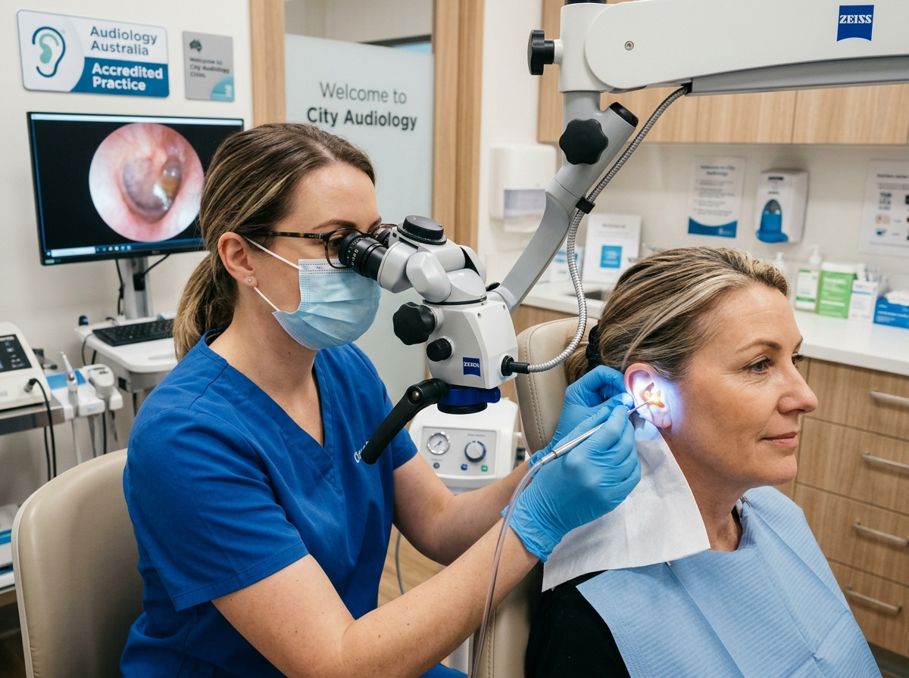
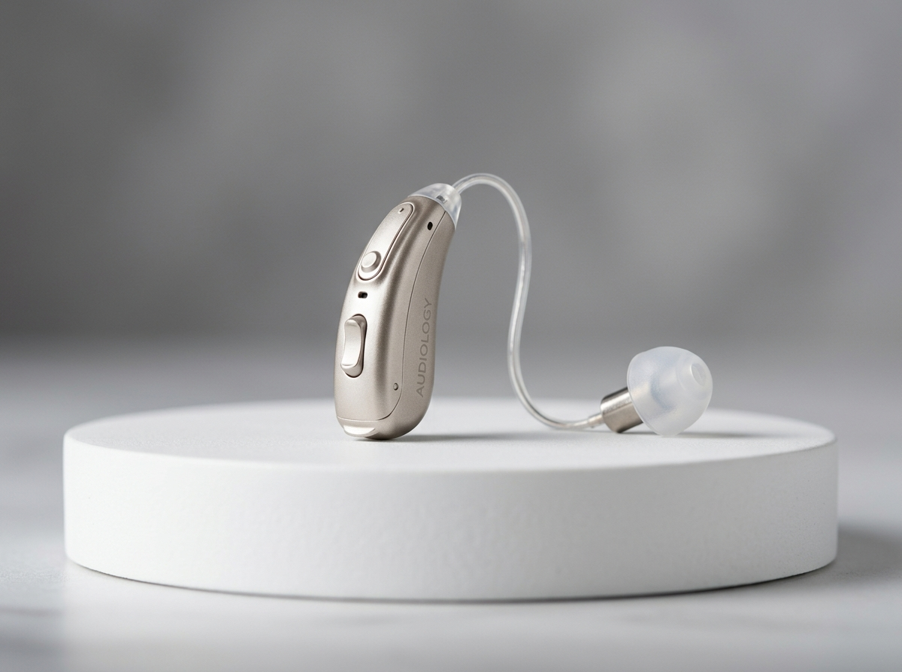

Clinical Audiology Services
Expert ear wax clearance, comprehensive diagnostic assessments, and tailor-made hearing rehabilitation by George Sebastian in Melbourne.
Micro-suction Ear Wax Removal
Excessive ear wax (cerumen impaction) is one of the most common causes of sudden hearing loss, ringing (tinnitus), ear fullness, and whistling in hearing aids.
At Prime Audiology, we utilize medical micro-suction—the gold standard technique endorsed by Ear, Nose & Throat (ENT) specialists worldwide. Unlike traditional water syringing or ear irrigation, micro-suction uses gentle, controlled medical suction under direct binocular microscope visualization.
Why Micro-suction is Superior:
- No messy water or high-pressure flushing: Completely dry procedure, eliminating the risk of ear canal infection.
- Safe for perforated eardrums: Ideal for patients with eardrum perforations, grommets, or sensitive ears.
- Instant Relief: The procedure takes 15–20 minutes with immediate restoration of hearing clarity.
- Direct Visualization: George visualizes every millimetre of the ear canal and tympanic membrane.

Micro-suction vs. Traditional Water Syringing
| Feature | Micro-suction (Prime Audiology) | Traditional Water Syringing (Irrigation) |
|---|---|---|
| Visual Control | Direct binocular microscopic view throughout | Blind water injection into the canal |
| Water Usage | 100% Dry procedure | Pressurized warm water forced against eardrum |
| Perforated Eardrum Safety | Safe & Recommended | Contraindicated (Risk of middle-ear infection) |
| Discomfort / Dizziness | Minimal to none; gentle soft suction | Can induce caloric reflex dizziness or nausea |
Comprehensive Diagnostic Hearing Evaluations
A proper hearing evaluation is vastly more thorough than a simple 5-minute automated online screener. George Sebastian conducts in-depth diagnostic tests within a calibrated acoustic environment to accurately identify the type, degree, and medical cause of any auditory changes.
- Video Otoscopy: High-definition inspection of your outer ear canal and eardrum, displayed live on screen for you.
- Pure Tone Audiometry (Air & Bone): Precision frequency testing to establish whether hearing changes are sensorineural or conductive.
- Speech Discrimination in Noise: Crucial assessment determining your brain’s ability to extract speech consonants amidst competing background chatter.
- Tympanometry & Middle Ear Reflexes: Measures eardrum mobility and middle-ear pressure to detect fluid, glue ear, or Eustachian tube dysfunction.

Hearing Aid Fitting & Real-Ear Verification (REM)
Buying a hearing aid is only the beginning; how accurately it is programmed determines whether it transforms your communication or ends up in a bedside drawer.
Because every human ear canal has a unique anatomical shape and acoustic resonance, Prime Audiology uses Real-Ear Measurement (REM) for every fitting. A tiny probe microphone is placed deep into your ear canal alongside the hearing aid to measure exactly what volume and frequency frequencies reach your eardrum in real-time.
This scientific verification guarantees that speech sounds are crisp and clear without being uncomfortably sharp or harsh.

Home Visits & Mobile Audiology Across Melbourne
We understand that mobility limitations, driving cessation, or post-operative recovery can make traveling to a medical clinic exhausting.
Clinical Care Delivered in the Comfort of Your Living Room
George Sebastian brings hospital-grade portable audiometers, diagnostic video otoscopes, and micro-suction clearance equipment directly to you. We can evaluate your hearing in the exact environment where you spend your time, tune your hearing aids to your favourite TV chair, and train family members on easy device maintenance.